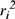
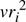

Networking Security Networking Security Networking Security Security Networking Security Networking Security Networking Charlie Kaufman Radia Perlman Mike Speciner Prentice Hall Network Security: Private Communication in a Public World, Second Edition
6.8. Zero Knowledge Proof Systems
A zero knowledge proof system only does authentication. It allows you to prove that you know a secret (something associated with your public key) without actually revealing the secret. RSA is a zero knowledge proof system, in the sense that you can prove you know the secret associated with your public key without revealing your private key. However, there are zero knowledge proof systems with much higher performance than RSA, although they do not have the ability to do signatures or encryption.
The classic example of a zero knowledge authentication scheme is based on graphs. A graph is a bunch of vertices connected by a bunch of edges. Typically, we name the vertices and specify the edges as pairs of vertices. We consider two graphs isomorphic if we can rename the vertices of one to get a graph identical to the other. Nobody knows how to efficiently determine whether two arbitrary graphs are isomorphic. The assumption that this is hard forms the basis of the authentication scheme.
Alice specifies a large graph (say 500 vertices). She renames the vertices to produce an isomorphic graph. Call the two graphs Graph A and Graph B. Alice knows the mapping that will transform Graph A into Graph B. Nobody else can compute it (in reasonable time). Her public key is the specification of the two graphs. Her private key is the mapping between the two graphs.
To prove to Bob that she is Alice, she renames the vertices to find a new set of graphs, say G1, G2,...Gk, which she sends to Bob. Then Bob asks, for each i, for Alice to show him the mapping between Gi and one of Graph A or Graph B. Bob can choose which one, but he can't ask Alice to show both mappings for any i (or else Bob could piece the two mappings together to get a mapping from Graph A to Graph B). If Fred tries to impersonate Alice, he can make some graphs that are mapped from Graph A and some graphs that are mapped from Graph B, but he won't be able to find any graph for which he could show a map for both. So for each graph he sends to Bob, he will have only a 50% chance of successfully showing the requested mapping. For 30 graphs, the odds of Fred successfully impersonating Alice are only 1 in 230, or one in ten billion.
Why is this zero knowledge? After Alice proves herself to Bob, Bob knows some graphs with mappings to Graph A, and some with mappings to Graph B. He could have generated these himself, so Alice can't have given him any actual information.
The graph-based authentication scheme is unfortunately too inefficient for practical use. The following authentication protocol, while not quite zero knowledge, is extremely efficient. It is a variant of Fiat-Shamir [FEIG87].
Alice establishes a public key consisting of <n,v>, where n is the product of two large primes (just like the n in RSA), and v is a number for which only Alice knows the square root mod n. Finding such an n is done just like in RSA. Finding v is really easy. Alice merely selects any random number s and squares it mod n to obtain v. After doing so, Alice can forget n's factors and only remember s as her secret, and divulge <n,v> as her public key.
To prove to Bob that she is Alice, she does the following:
Alice chooses k random numbers, r1, r2,...rk. For each ri, she sends

mod n to Bob. Bob chooses a random subset of the
and tells Alice which subset he has selected to be known as subset 1. The others will be known as subset 2. Alice sends sri mod n for each
of subset 1, and sends ri mod n for each
of subset 2. Bob squares Alice's replies mod n. For those
in subset 1 he checks that the square of the reply is

mod n. For those
in subset 2 he checks that the square of the reply is
mod n. Why does this work?
Finding square roots mod n is at least as hard as factoring n. This means that if you knew an easy way to find square roots mod n, you'd be able to factor n. And we all hope that factoring is difficult.
How to factor n if you can compute square roots mod n |
We'll assume n is odd and not the power of a prime. (If n is even, you can factor out all the factors of 2. If n is a power of a prime, you can try computing its kth root using ordinary arithmetic, and you'll only need to try for k  logp n where p is the smallest prime you're not willing to try dividing into n directly.) logp n where p is the smallest prime you're not willing to try dividing into n directly.)
Assume you have a method to compute square roots mod n. You choose a random x and compute s = x2 mod n. Then you use your method of computing square roots mod n to compute the square root of s mod n, say y. This gives you two numbers, x and y, with the same square mod n. So (x + y)(x - y) = x2 - y2 = 0 mod n. If n has k distinct prime factors, then x2 has 2k square roots mod n (see §7.5 Chinese Remainder Theorem). So if n has at least 2 distinct prime factors, there is at least a 50% chance that y isn't x or -x mod n. In that case, neither x + y mod n nor x - y mod n is 0 mod n. And so the gcd of either of them with n must be a nontrivial factor of n.
|
Suppose Fred wants to impersonate Alice. Anyone (including Fred) can compute squares mod n. Fred cannot take square roots mod n, but if he starts with a random r, he can compute r2. Fred can give the correct answers for subset 2. But he cannot give the correct answers for subset 1, since he does not know s. So, what is the purpose of subset 2? Why isn't the protocol simply that Alice sends pairs <ri2, sri>? The problem with the simpler protocol is that once Alice sends a list of values to Bob, Bob can send the same values to Carol and successfully impersonate Alice. With the protocol as specified, the only information Bob can get is some numbers zi for which Alice tells him the square root of zi (those in subset 2), and some numbers zi for which Alice tells him the square root of vzi. He doesn't need Alice in order to find numbers for which he knows the square rootÂhe can get such numbers himself by taking random numbers and squaring them. But he does need Alice for finding pairs <
, sri>. However, for any <
, sri> he obtains from Alice rather than starting with ri and squaring it himself, he will not know riÂhe will only know sri. So, assuming Fred has overheard Alice proving her identity to some people (maybe even Fred), Fred may have collected some values of <
, sri>. When Fred attempts to impersonate Alice he has a choice for each number of taking one of the values he has overheard from Alice, and for those he will be able to know the answer if they are selected to be in subset 1, or he can choose a random r and square it, and for those he will know the answer if they are selected to be in subset 2. But there will be no number for which he'll know both answers. That means there is a 50% probability, for each i, that Fred will be unlucky, and Carol will ask for the answer Fred does not know. If the protocol demands that Fred sends enough values (say 30), then the probability is overwhelming that his impersonation will be discovered.
This scheme is much less work than RSA. Work for Alice is 45 modular multiplies (30 squarings plus an average 15 multiplies by s). Work for Bob is the same. By contrast, using RSA Alice must do a modular exponentiation with an average 768 modular multiplies, while Bob would get off easier with three (assuming a public exponent of 3).
6.8.1. Zero Knowledge Signatures
Any zero knowledge system can be transformed into a public key signature scheme, though the performance in terms of bandwidth and CPU power usually makes the resulting scheme unattractive. Let's assume a typical sort of zero knowledge system. Alice has some sort of secret that enables her to transmit something and compute any answer to a question Bob might pose about that something, whereas an impostor can answer only one specific question Bob might pose. For example, in the case of the graph isomorphism scheme, Alice's secret is the mapping between graphs G1 and G2. The "something" that Alice transmits is a new graph, Gi. Bob's challenges are binary values. Only Alice can answer both 0 (show me the mapping from Gi to G1) and 1 (show me the mapping from Gi to G2). An impostor, say Trudy, can only answer one of the values (if she derived Gi from G1, she'll be lucky if Bob asks 0 but be unable to respond if Bob asks 1).
In some other zero knowledge proof schemes Bob's challenge is a larger number (say 16 bits). Alice can answer any value Bob supplies, whereas impostor Trudy can only know a single value. So Trudy in that case would have only a 1 in 216 chance (per challenge) of being lucky enough for Bob to supply the question she can answer.
A signature scheme is not interactive. Bob cannot supply a challenge, or set of challenges. Instead, Alice has a message m that she wishes to sign. We're going to use a message digest function as a Bob surrogate. The message digest function will create a set of challenges that Alice cannot predict, and the fact that she can answer all the queries will reassure someone that Alice did produce the signature.
Let's use Fiat-Shamir as an example. If Alice were proving her identity to Bob using Fiat-Shamir, her public key would be <n,v> and she'd transmit
mod n (for randomly chosen r1,...rk). Then Bob would send her k binary challenges. Now let's transform it into a signature scheme. Alice (and someone verifying Alice's signature) will take the message m, concatenated with the k values
mod n. The result is message digested, and the resulting message digest is used as the surrogate Bob. For a 128-bit message digest, if k is 128, then each bit in the message digest corresponds to the challenge for the corresponding ri. The signature on m consists of the k values
mod n and the k responses to the calculated challenges.
Why can't impostor Trudy forge a signature? She can choose any k values of ri, but until she chooses them, she cannot predict the generated challenge for each one. She can spend a lot of off-line searching for a set of ri that will happen to generate the challenges she can answer, so k probably needs to be a bit larger than it would be in an interactive zero knowledge proof. For instance, it might be acceptable for an impostor to have only a one in a billion chance of fooling an interactive Bob, but an impostor that was constructing a signature might be able to test a billion signatures for one that wound up asking the right questions. If there's a 1 in 264 chance, then a signature verifier can be reasonably certain that an impostor could not have been lucky enough, even with an off-line search, to find an appropriate set of ri.
|